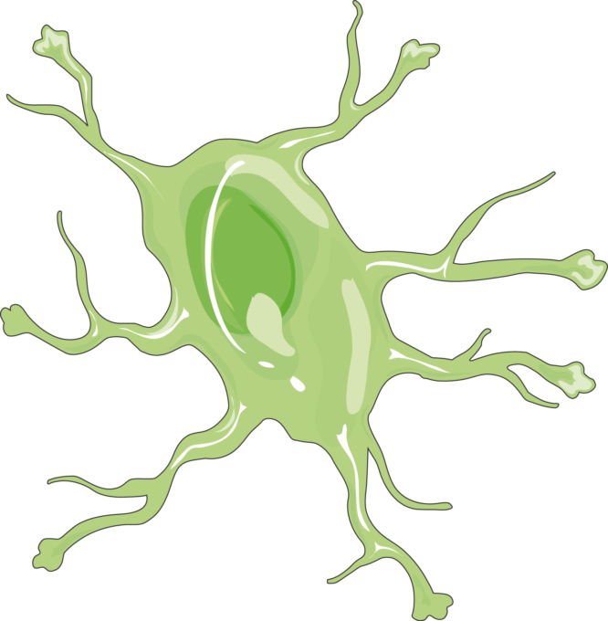

As células da glia são células não neuronais presentes no sistema nervoso central que dão suporte metabólico aos neurônios. Comunicam-se entre si e com os neurônios usando sinais químicos e elétricos. São divididas em astrócitos, oligodendrócitos e micróglias. No SNP, destacam-se as células de Schwann. Essas células têm como função fornecer oxigênio e nutrientes para os neurônios, destruir patógenos, isolar um neurônio do outro e remover células mortas. As células de glia produzem moléculas que modificam o crescimento de dendritos e axônios. Descobertas recentes indicam que participam das transmissões sinápticas, mediante a liberação de neurotransmissores e de ATP.
Célula da glia (astrócito)

Fonte: https://smart.servier.com/smart_image/astrocyte-cell/